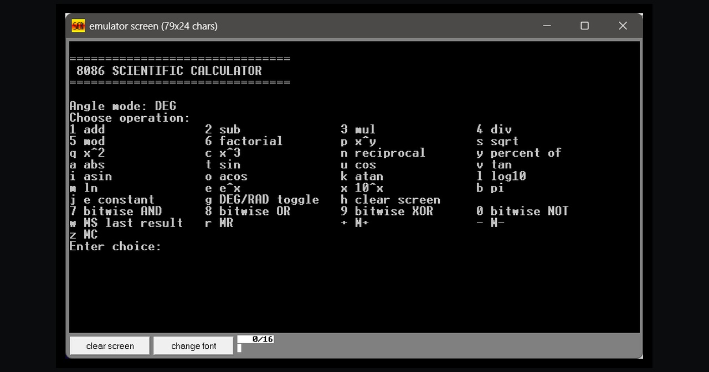

Apr 2026 - Jun 2026
Assembly
Scientific Calculator EMU8086
Assembly language calculator with arithmetic, logarithmic, trigonometric, and bitwise operations using lookup tables.
- Implemented the complete feature logic in EMU8086 assembly.
- Built as a three-member university project associated with Bahria University.